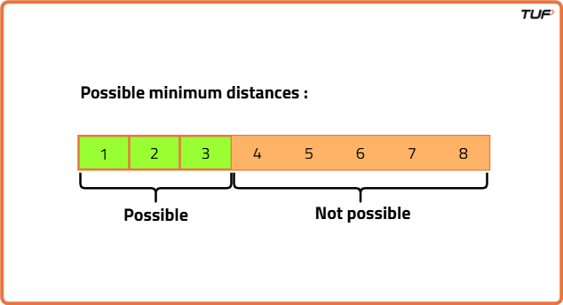

Aggressive Cows : Detailed Solution
Problem Statement: You are given an array 'arr' of size 'n' which denotes the position of stalls. You are also given an integer 'k' which denotes the number of aggressive cows.
You are given the task of assigning stalls to 'k' cows such that the minimum distance between any two of them is the maximum possible. Find the maximum possible minimum distance.
Examples
Example 1:
Input Format: N = 6, k = 4, arr[] = {0,3,4,7,10,9}
Result: 3
Explanation: The maximum possible minimum distance between any two cows will be 3 when 4 cows are placed at positions {0, 3, 7, 10}. Here the distances between cows are 3, 4, and 3 respectively. We cannot make the minimum distance greater than 3 in any ways.
Example 2:
Input Format: N = 5, k = 2, arr[] = {4,2,1,3,6}
Result: 5
Explanation: The maximum possible minimum distance between any two cows will be 5 when 2 cows are placed at positions {1, 6}.
Disclaimer: Here is the practice link to help you assess your knowledge better. It's highly recommend trying to solve it before looking at the solution.
Brute Force Approach
Algorithm
Intuition
The basic idea is to test every possible distance between 1 and the difference between the farthest and nearest stalls. The largest distance for which canWePlace() returns true will be our answer.
Algorithm:
- Sort the stalls array in increasing order.
- Use a loop to check every possible distance one by one.
- For each distance, call the canWePlace() function to see if all cows can be placed:
- If canWePlace() returns false for a distance, return the previous distance (current distance - 1), as that was the largest distance where placement was possible.
- If the loop finishes without failure, return the largest possible distance (difference between farthest and nearest stalls).
Code
#include <bits/stdc++.h>
using namespace std;
// Class to solve the Aggressive Cows problem
class Solution {
public:
// Function to check if we can place all cows with at least distance 'd'
bool canPlace(vector<int>& stalls, int cows, int d) {
// Place the first cow at the first stall
int count = 1;
int lastPos = stalls[0];
// Try placing the remaining cows
for (int i = 1; i < stalls.size(); i++) {
// If current stall is at least 'd' away from last cow
if (stalls[i] - lastPos >= d) {
// Place a cow here
count++;
lastPos = stalls[i];
}
// If all cows placed successfully, return true
if (count >= cows) return true;
}
// Not possible to place all cows
return false;
}
// Function to find maximum minimum distance using brute force
int aggressiveCows(vector<int>& stalls, int cows) {
// Step 1: Sort stall positions
sort(stalls.begin(), stalls.end());
// Step 2: Get the maximum possible distance
int n = stalls.size();
int maxDist = stalls[n - 1] - stalls[0];
// Step 3: Variable to store answer
int ans = 0;
// Step 4: Try all possible distances from 1 to maxDist
for (int d = 1; d <= maxDist; d++) {
// If cows can be placed with distance d
if (canPlace(stalls, cows, d)) {
// Update answer
ans = d;
}
}
// Step 5: Return the maximum valid distance
return ans;
}
};
// Driver code
int main() {
// Example input
vector<int> stalls = {1, 2, 8, 4, 9};
int cows = 3;
// Create object of Solution class
Solution obj;
// Call function and print result
cout << obj.aggressiveCows(stalls, cows) << endl;
return 0;
}
Complexity Analysis
Time Complexity: O(NlogN) + O(N *(max(stalls[])-min(stalls[]))), where N = size of the array, max(stalls[]) = maximum element in stalls[] array, min(stalls[]) = minimum element in stalls[] array.
Space Complexity: O(1) as we are not using any extra space to solve this problem.
Optimal Approach
Algorithm
We use Binary Search to optimize the solution by reducing the answer space in half each time.
The main idea of Binary Search is to determine which half of the search space can be eliminated based on a specific condition, thus minimizing unnecessary checks.
The answer space is sorted: 1 to the difference between max and min values. We can divide this space into two parts:
Example: For stalls = {1, 2, 8, 4, 9}, the possible distances are shown below:

- Sort the stalls: Arrange the stalls in ascending order.
- Set the search range:
- Start with the smallest possible distance.
- The largest possible distance is the gap between the farthest and nearest stalls.
- Use Binary Search: Repeat the process until the search range is exhausted:
- Pick the middle distance: Test this distance as a possible answer.
- Check if it works:
- If it works: Try to increase the distance to see if a larger one is possible.
- If it doesn’t work: Decrease the distance and test smaller ones.
- Return answer: After exiting the loop,
highholds the largest valid distance.
Code
#include <bits/stdc++.h>
using namespace std;
// Class to solve Aggressive Cows problem
class Solution {
public:
// Function to check if we can place all cows with at least 'd' distance
bool canPlace(vector<int>& stalls, int cows, int d) {
// Place first cow at the first stall
int count = 1;
int lastPos = stalls[0];
// Loop through all stalls
for (int i = 1; i < stalls.size(); i++) {
// Check if this stall is at least 'd' away from last placed cow
if (stalls[i] - lastPos >= d) {
// Place the cow here
count++;
// Update last placed cow position
lastPos = stalls[i];
}
// If all cows are placed successfully
if (count >= cows) return true;
}
// Return false if we could not place all cows
return false;
}
// Function to maximize minimum distance between cows
int aggressiveCows(vector<int>& stalls, int cows) {
// Sort the stalls
sort(stalls.begin(), stalls.end());
// Define search space
int low = 1;
int high = stalls.back() - stalls.front();
int ans = 0;
// Apply binary search
while (low <= high) {
// Find mid distance
int mid = low + (high - low) / 2;
// If placing cows is possible with mid distance
if (canPlace(stalls, cows, mid)) {
// Store this as potential answer
ans = mid;
// Try to find larger minimum distance
low = mid + 1;
}
else {
// Otherwise try smaller distance
high = mid - 1;
}
}
// Return the largest minimum distance
return ans;
}
};
// Driver function
int main() {
// Input stalls
vector<int> stalls = {1, 2, 8, 4, 9};
// Number of cows
int cows = 3;
// Create object
Solution obj;
// Print result
cout << obj.aggressiveCows(stalls, cows) << endl;
return 0;
}
Complexity Analysis
Time Complexity: O(NlogN) + O(N * log(max(stalls[])-min(stalls[]))), where N = size of the array, max(stalls[]) = maximum element in stalls[] array, min(stalls[]) = minimum element in stalls[] array.
Space Complexity: O(1) as we are not using any extra space to solve this problem.